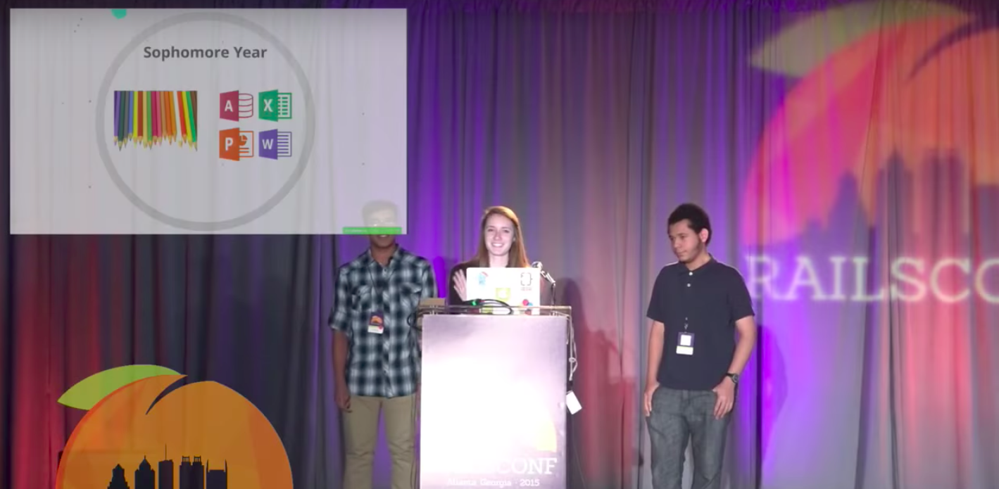
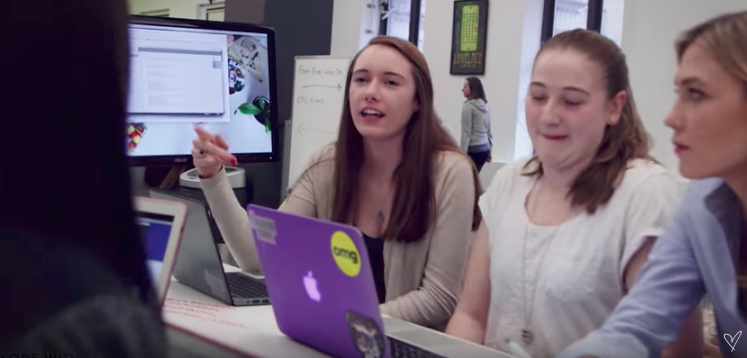
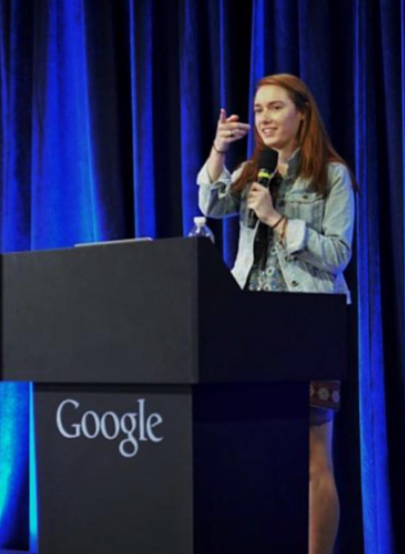
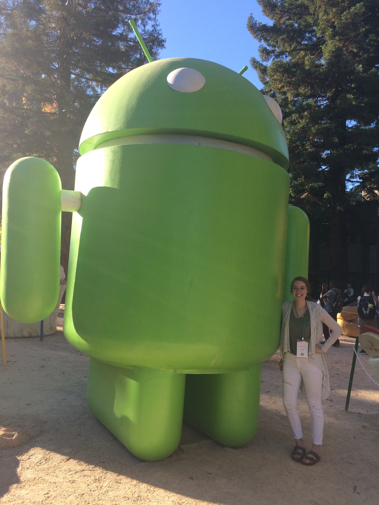

I am a rising junior at University of Wisconsin-Madison pursuing a Computer Science (B.S.) degree as well as Mathematics and Education & Educational Services certificates. My interests include fullstack web development, computer science education, kayaking, and sweating while watching Chopped contestants plate their food with 5 seconds left on the clock. I also enjoy telling people about the summer during which my mom made a couple of my siblings and me attend circus camp. I plan to graduate in 2019 and pursue a career as a software engineer.
Here are pictures of me doing fun things:
Speaking in front of over 1,500 people with Flatiron peers during Sara Chipps' (CEO of Jewelbots) keynote at RailsConf 2015. The nerves I had before this 100% shed 5 years off of my life.
Discussing computer science with coder and supermodel Karlie Kloss (far right) in a promotional video for her scholarship for women in tech.
Demoing a web application at Google's New York office after participating in Computer Science Summer Institute.
Pictured here with a full time googler (left) on Google's Mountain View campus after participating in CodeU.